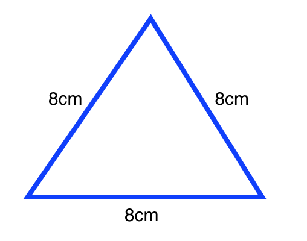
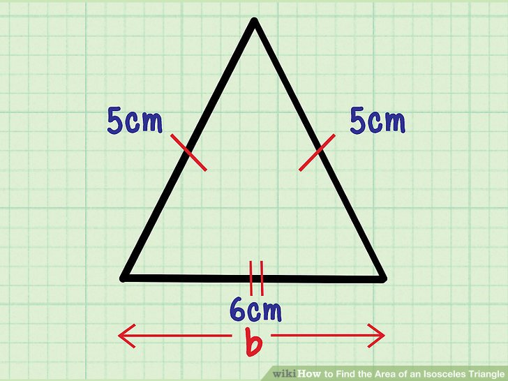
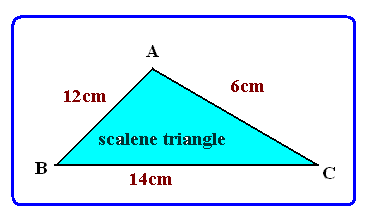

Triangle Tracker enables you determine the type of triangle when you input 3 length values.
According to Oxford Dictionaries, a shape is geometric figure such as a square, triangle or rectangle.
The Urban Dictionary describes a triangle as a geometric figure with three sides.
  